作者：创世魂
● 概述
其效果如下：
1、树形框可以创建多级子项目，点击减号图标或双击项目可以进行收缩，如果将“显示加减框”属性设置为假，可以取消收缩图标的显示。
2、项目图标由“图片组”属性设置，设置后就可以在添加项目时，指定项目所显示的图标索引。
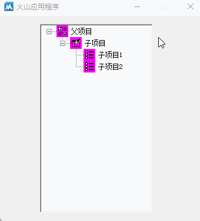
● 预设数据
1、 通过项目属性即可预设数据。
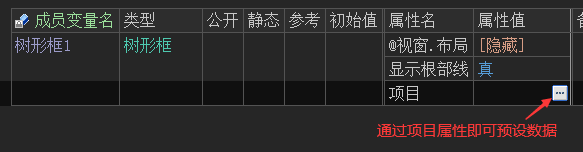
2、首先要点击“添加项目”按钮后，才能设置首个项目的标题。
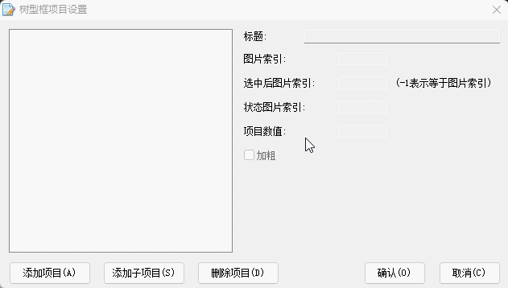
3、 如果需要添加子项目，选中一个项目后点击“添加子项目”即可。
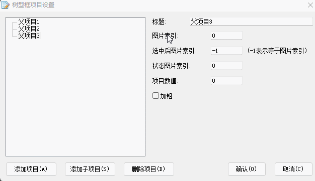
4、 如果需要给子项目添加同级的项目，选中后点击“添加项目”即可。
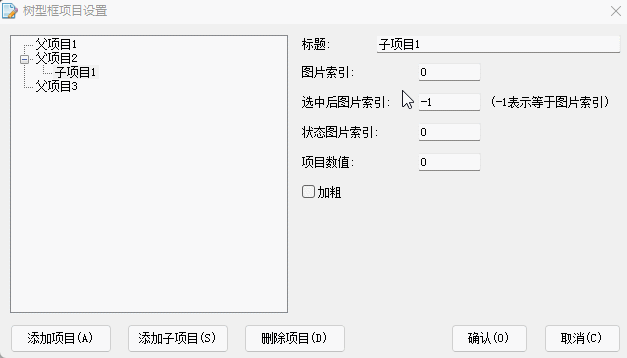
5、 子项目也可以继续添加子项目。
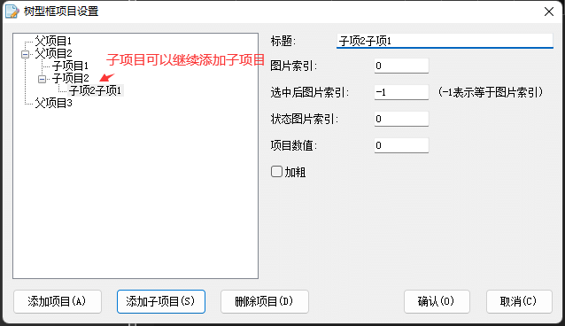
6、 最后点击“确认”按钮就可以保存数据，会自动生成项目所需文本。
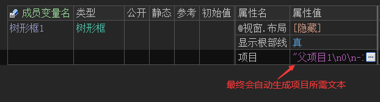
7、 打开“项目”属性的帮助页，即可看到文本格式描述，也可以手动拼接文本实现项目添加。
注：本属性支持动态调用。
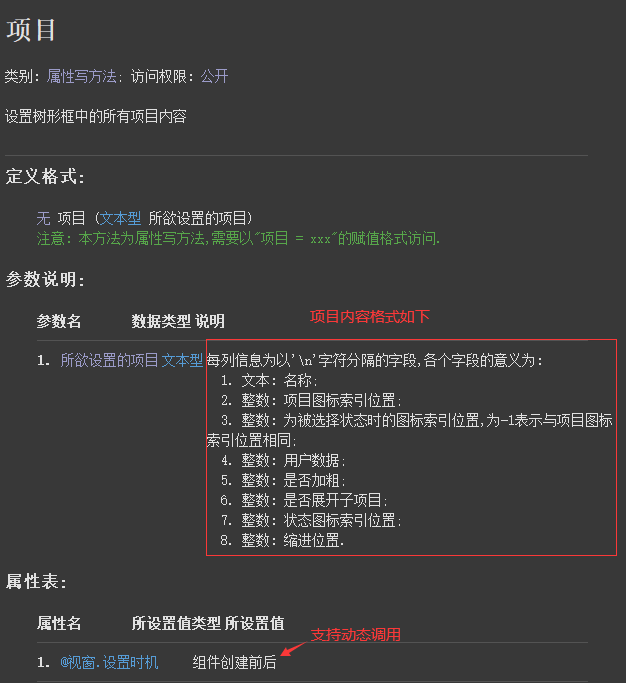
● 添加项目
帮助文档如下图：
通过“加入项目”方法即可实现添加项目功能，本方法共有7个参数。
除了参数1和2比较重要外，其余参数可省略。
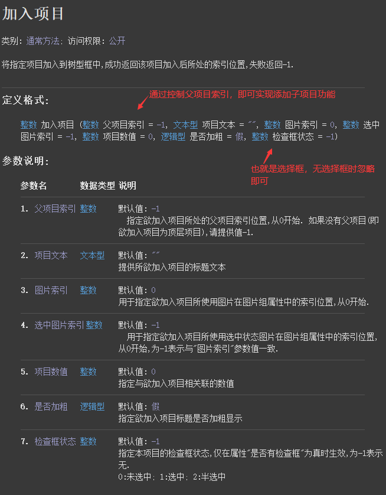
代码编写如下图：
利用当前方法实现“项目”设计器中添加项目和添加子项目的效果。
按钮1点击后进行添加项目：
1、如果想要实现添加当前选中项目的同级项目，首先需要利用“取父项目()”方法取出现行选中项的父项目索引。
2、拿到父项目索引后，将其放到“加入项目()”的参数1中，即可实现添加同级项目。
3、加入项目后会返回项目索引，利用“现行选中项”写属性即可选中当前项目。
按钮2点击后进行添加子项目：
直接给“加入项目()”方法的参数1提供现行选中项即可实现添加子项目。
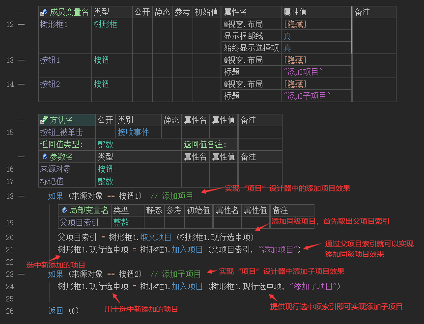
运行效果如下图：
最终实现了和项目设计器中类似的效果。
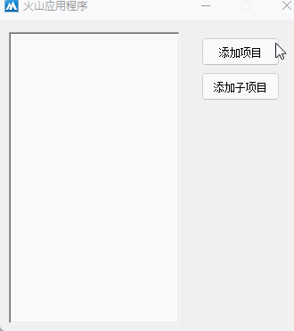
● 修改项目
帮助文档如下图：
通过“置项目文本()”方法即可实现修改项目，本方法共有两个参数。
参数1：提供要修改的项目索引。
参数2：提供新的项目标题。
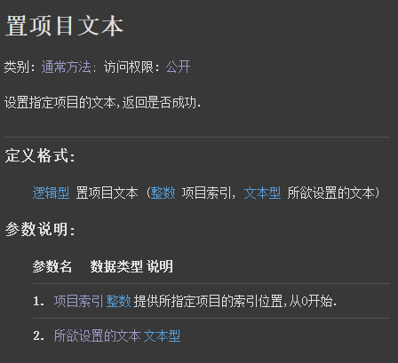
代码编写如下图：
按钮点击后修改选中项的标题。
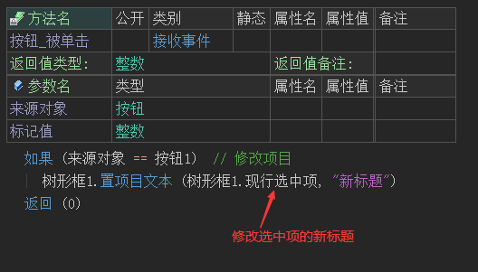
运行效果如下图：
最终可实现修改选中项的标题。
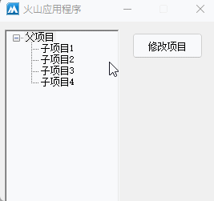
● 删除项目
帮助文档如下图：
本方法共有1个参数，提供要删除的项目索引即可删除项目。
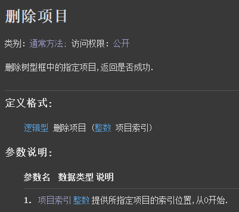
代码编写如下图：
删除选中项的项目索引。
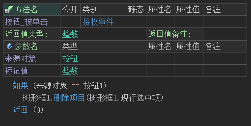
运行效果如下图：
最终选中一个项目后即可将其删除，如果当前项目拥有子项目会一同删除。
注：如果需要删除全部项目，调用“清空()”方法即可。
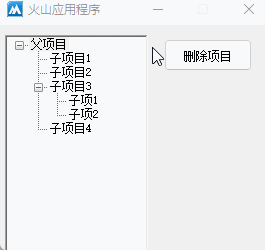
● 编辑项目
代码编写如下图：
1、首先需要将“允许编辑”属性设置为真。
2、添加“开始编辑”事件，可以获取编辑前的文本。
3、添加“结束编辑”事件，可以获取编辑后的文本。
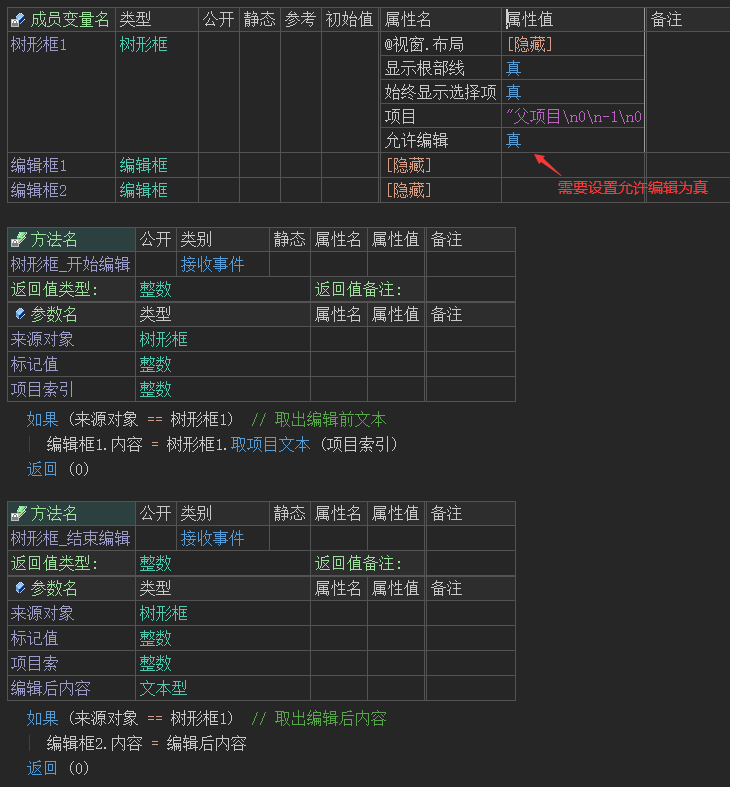
运行效果如下图：
最终编辑前后的文本都可以显示在编辑框中。
注：进入编辑状态并非双击，而是首先单击选中项目，在此单击时即可进入编辑状态。
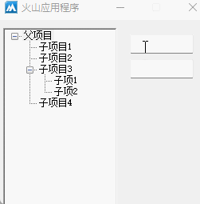
● 取项目文本
帮助文档如下图：
通过本方法可取出某个项目的文本。
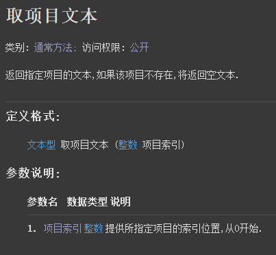
代码编写如下图：
1、如果想要实现实时取出选中项的文本，可以添加“项目被选择”事件，在本事件下即可实现。
2、 此事件的“选择方式”共有三个可选值，用于判断当前是通过哪种方式选择的。
返回0：表示键盘选择。
返回1：表示鼠标选择。
返回2：表示其它方式。
3、 在事件下判断“选择方式”参数就可以控制在哪种选择情况下取出项目文本。
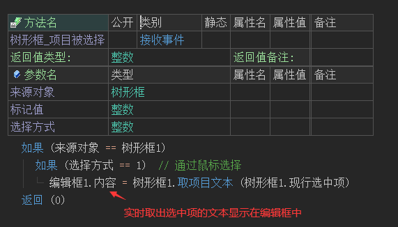
运行效果如下图：
最终可以实时取出项目文本显示在编辑框中。
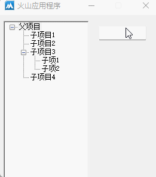
● 取父项目文本
帮助文档如下图：
调用“取父项目()”即可取出父项目索引，利用父项目索引结合“取项目文本()”方法即可取出父项目文本。
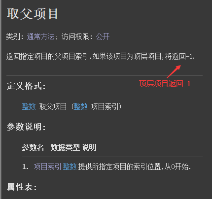
代码编写如下图：
为保证父项目存在，取出的父项目索引首先判断一下是否等于-1，如果不等于-1再进行取项目文本操作。
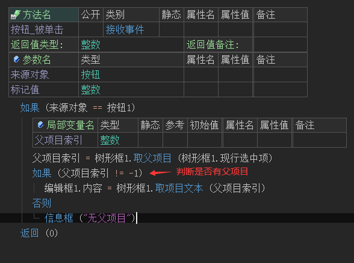
运行效果如下图：
最终父项目文本可以被成功取出，当无父项目时也可以弹出提示。
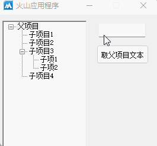
● 取子项目文本
概述：
如下图所示，取出“父项目1”的所有下级项目“子项目1、2、3”。
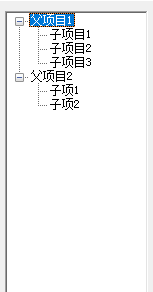
代码编写如下图：
取出下级项目并不复杂，利用“是否有子项目()”、“取项目数()”、“取父项目()”和“取项目文本()”方法，外加一个“现行选中项”读属性，最后配合计次循环即可实现。
1、添加“项目被选择”事件，用于项目被选择时就取出子项目文本。
2、清空编辑框内容。
3、判断是否有子项目，如果存在子项目则进入循环。
4、在循环中通过判断父项目索引是否等于选中项索引，从而判断选中项的下级索引是否属于选中项的子项目。
5、如果属于子项目则加入项目文本到编辑框，否则跳出循环。
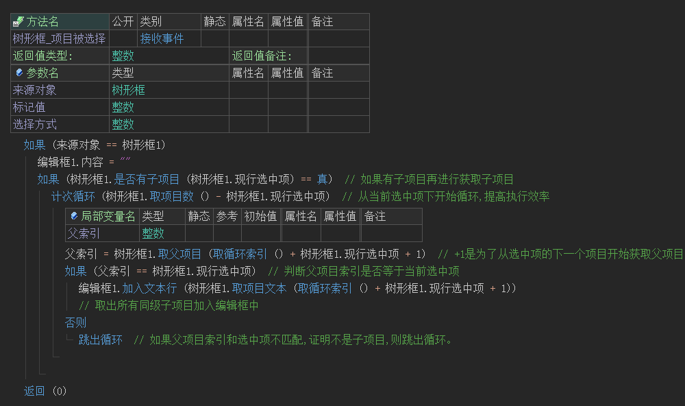
运行效果如下图：
最终当项目选择时可以取出所有的同级子项目。
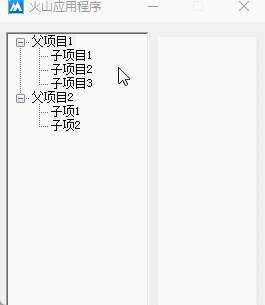
● 取根项目文本
概述：
如下图所示，取出“父项目1”和“父项目2”等所有根项目文本。
代码编写如下图：
利用“取项目数()”，“取缩进层次()”和“取项目文本()”三个方法即可实现取所有根项目。
其中主要依赖“取缩进层次()”方法，当缩进层次返回1表示根项目，缩进层次返回2表示第二层的树项目，以此类推。
所以只需要循环所有项目数，判断“取缩进层次()”方法的返回值是否为1，就可以取出所有根项目文本。
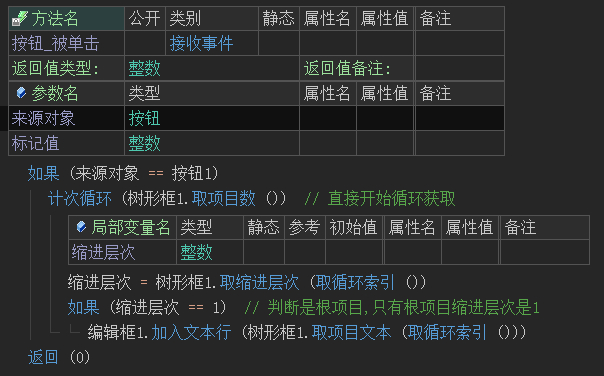
运行效果如下图：
最终所有根项目文本被取出。
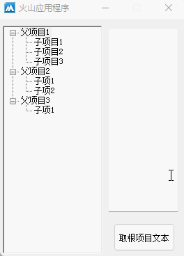
● 取项目路径
概述：
实现当选中一个项目后，将所有父项目取出以路径形式展示。
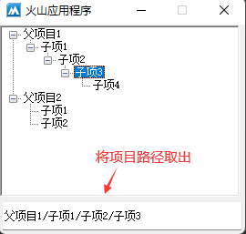
代码编写如下图：
利用“判断循环()”结合“取项目文本()”和“取父项目()”即可实现取项目路径的效果。
其中最主要的是利用“取父项目()”的返回值，来判断是否已经到根项目，从而决定是否进入循环。
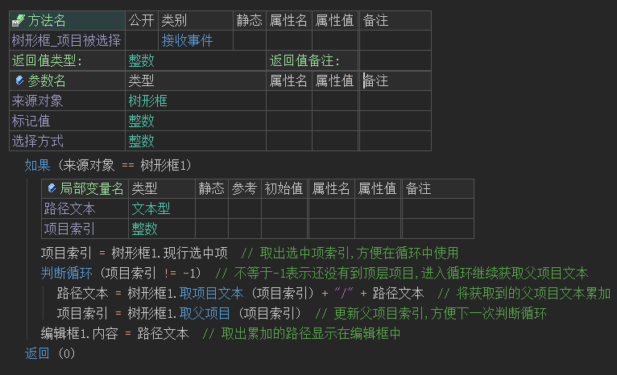
运行效果如下图：
最终项目被选择时可以取出项目路径。
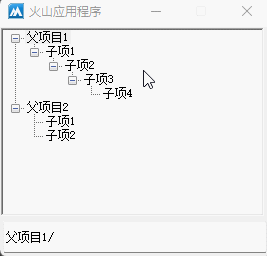
● 展开/收缩项目
代码编写如下图：
循环所有项目数，调用“扩展()”方法即可进行全部扩展操作，也可以单独调用本方法执行单独展开某个项目。
如果需要收缩项目，将代码中的“扩展”改为“收缩”即可。
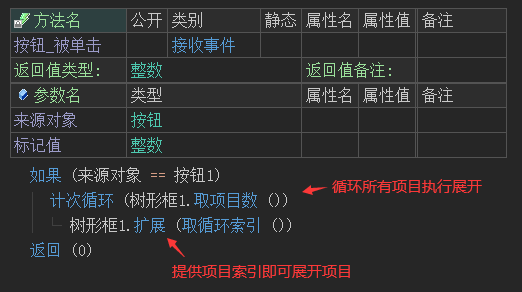
运行效果如下图：
按钮点击后即可全部展开项目。
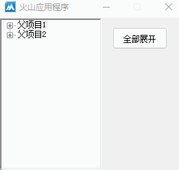
● 显示选择框
帮助文档如下图：
通过“是否有检查框”写属性即可让树形框显示选择框。
注：本属性不支持动态调用。
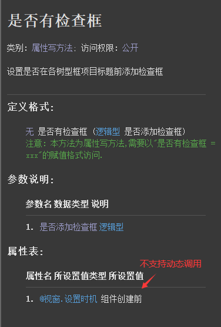
代码编写如下图：
将本属性设置为真即可显示选择框。
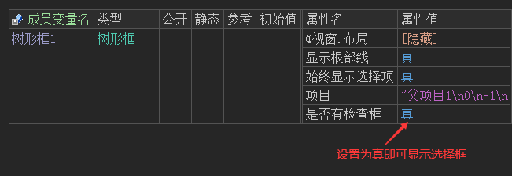
运行效果如下图：
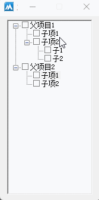
● 选择所有子项目并取出
帮助文档如下图：
选择子项需要使用“置检查框状态()”方法，本方法共有三个参数。
参数1：提供项目索引，从0开始。
参数2：提供选中状态，共有三个状态：0：未选中；1：选中；2：半选中。
参数3：将本参数设置为真，即可将所有子项目全部选中。
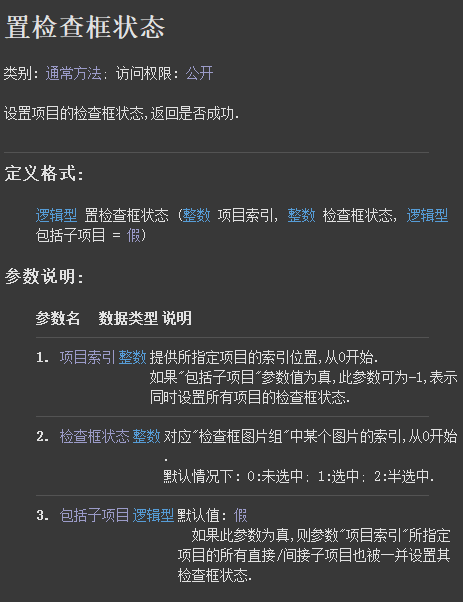
代码编写如下图：
首先添加“检查框状态被改变”事件，通过判断“检查框状态”的返回值，从而调用“置检查框状态()”方法进行全选或者取消全选的操作。
想要在选中后取出被选择的项目文本，可以在循环项目时利用“取缩进层次()”实现，因为当前选中项目的缩进层次必然小于被选中子项目的缩进层次。
根据这一原理，就可以在循环项目的过程中，判断缩进层次就可以取出所有子项目的文本，当不符合条件时就跳出循环。
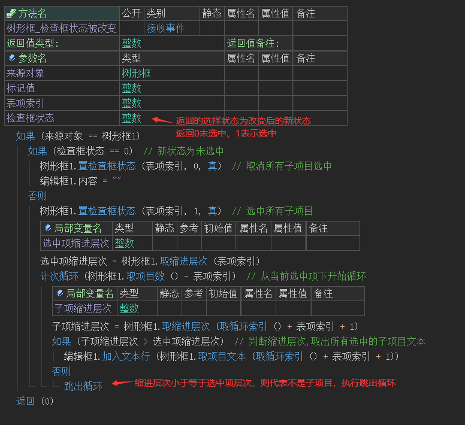
运行效果如下图：
最终当某个项目被选择时，其所有子项目可以被选中并取出。
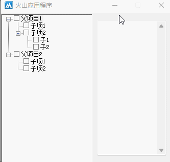
● 保存项目并读取
代码编写如下图：
在树形框中保存项目非常简单，只需要利用“项目”读属性即可将所有项目全部读取出来，返回的数据为文本型，如果需要保存成文件直接调用“写出文本文件()”方法进行存储即可。
如果需要读取项目，读入文本文件后赋值给“项目”写属性即可。
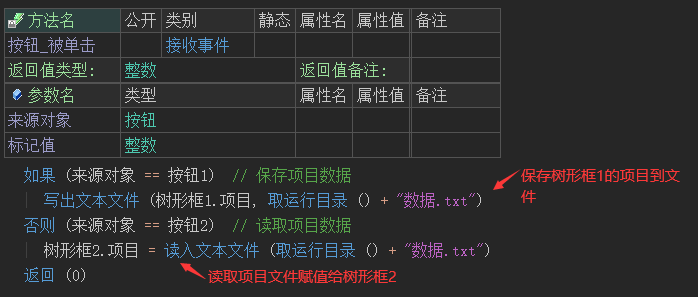
运行效果如下图：
最终可以看到树形框2读取的项目和树形框1一致，证明树形框项目保存成功。
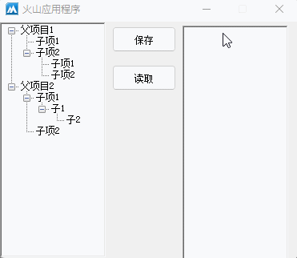